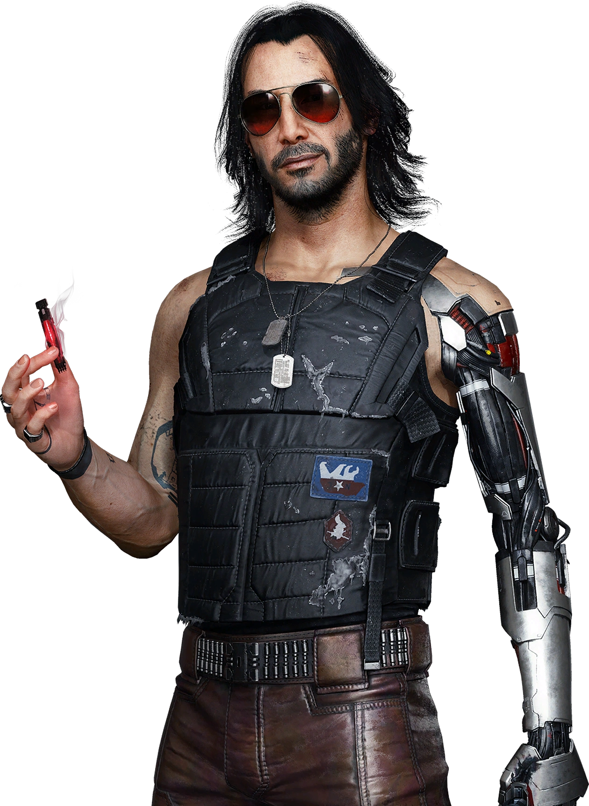
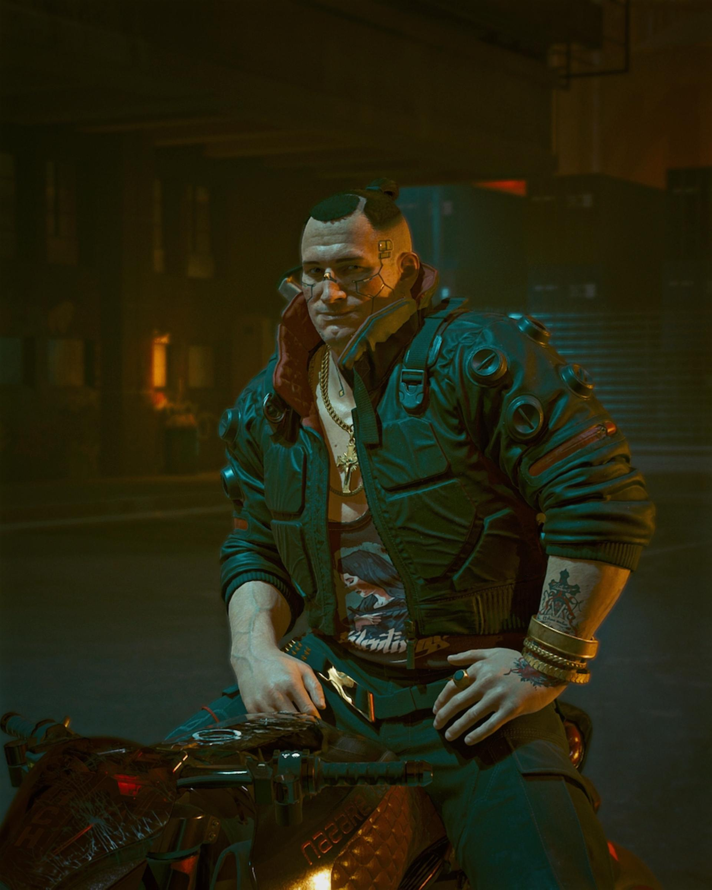
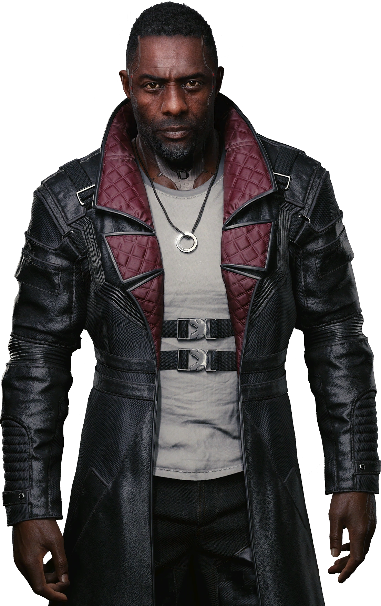
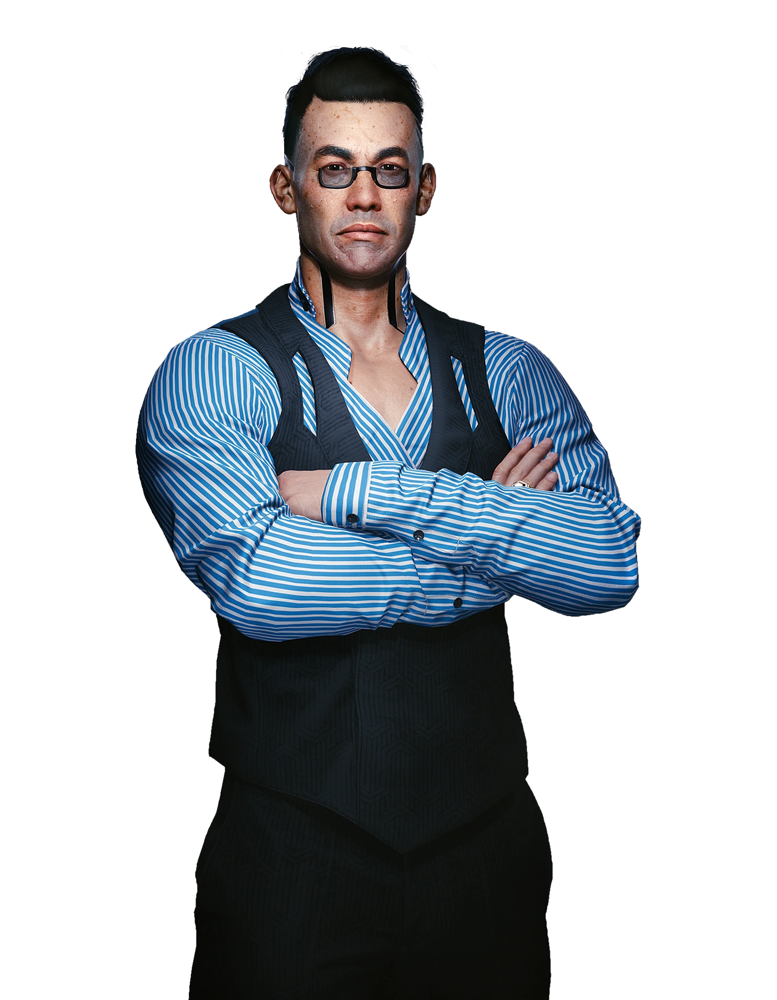

Main Character Played by the user, they can either be male or female
and can be customized very thoroughly.
Characters in the game Cyberpunk 2077

Johnny Silverhand
Ex Rock-star turned Terrorist against Multinational Organizations,
he thinks that the Corporations are only trying to control everyone.

Jackie Welles
V's Trusted Friend and Associate in the Mercenary Business,
Mother is Mama Welles.

Solomon Reed (Played by Idris Elba)
Works for the NUSA FIA (Federal Intelligence Agency),
Meets V in the Badlands after rescuing the President of
the NUSA.

Yorinobu Arasaka
Heir to the Arasaka Corporation, his Father is Saburo Arasaka.
He rebels against his Father and partakes in gang leadership.